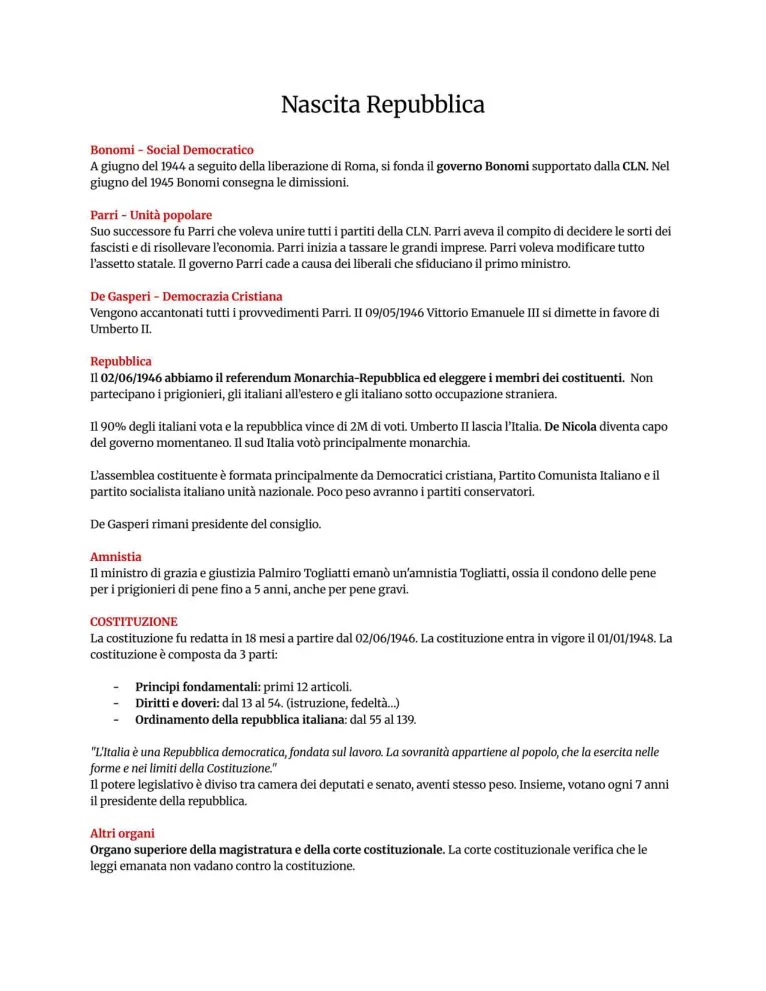

Nascita della Repubblica italiana
Resistenza, liberazione, referendum istituzionale, Assemblea costituente e Costituzione.
Studio guidato
Resistenza e liberazione
Dopo l’8 settembre 1943 l’Italia è divisa: al Sud il Regno e gli Alleati, al Centro-Nord occupazione tedesca e Repubblica sociale italiana. La Resistenza e il CLN partecipano alla liberazione.
25 aprile 1945
Il 25 aprile è ricordato come data simbolica della Liberazione dal nazifascismo. Segna la fine della guerra in Italia e l’inizio della ricostruzione democratica.
Referendum del 2 giugno
Il 2 giugno 1946 gli italiani votano tra monarchia e repubblica. Per la prima volta le donne partecipano a una consultazione politica nazionale.
Costituente
Lo stesso giorno viene eletta l’Assemblea costituente, incaricata di scrivere la nuova Costituzione. Le principali culture politiche antifasciste collaborano alla costruzione dello Stato democratico.
Costituzione
La Costituzione repubblicana entra in vigore il 1 gennaio 1948. Al centro ci sono diritti, doveri, sovranità popolare, lavoro, uguaglianza e separazione dei poteri.
Parole chiave
Pagine originali dal file
Le immagini sotto mantengono il riferimento diretto alle pagine del PDF usato come base del sito.

Quiz finale
Devi rispondere correttamente a tutte le 12 domande. Se ne sbagli anche solo una, il quiz si azzera e ricomincia da capo.